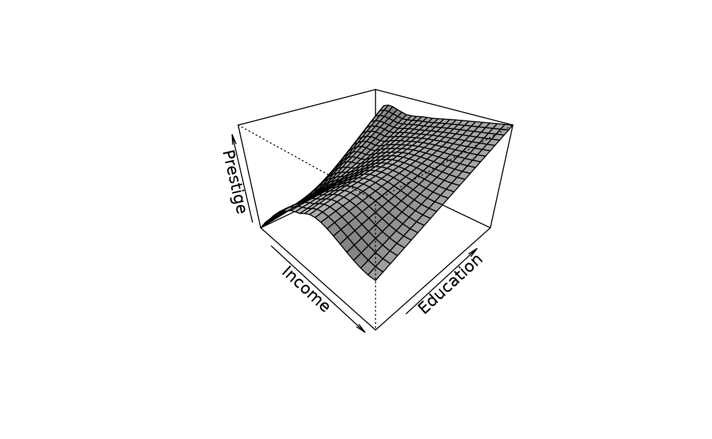
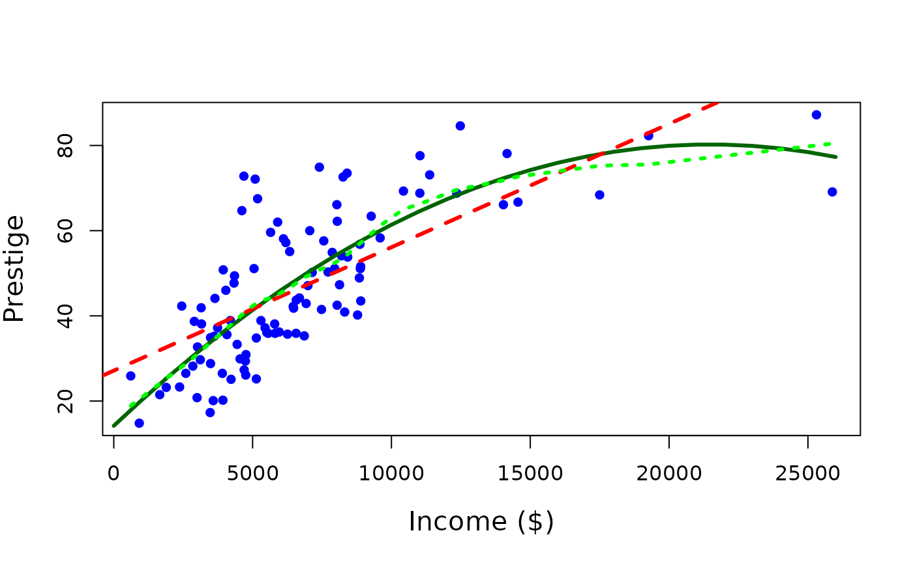
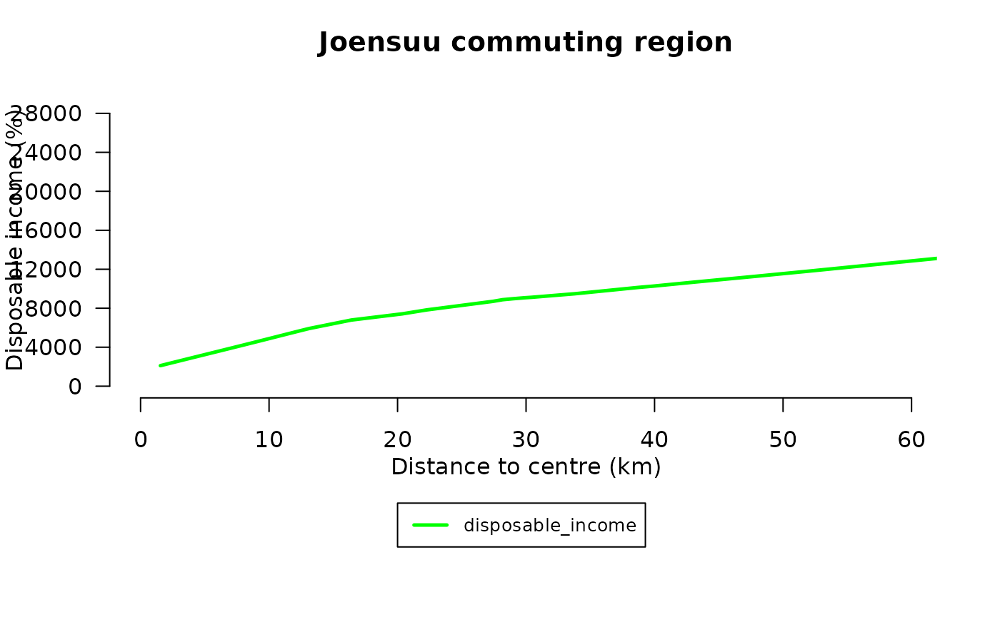
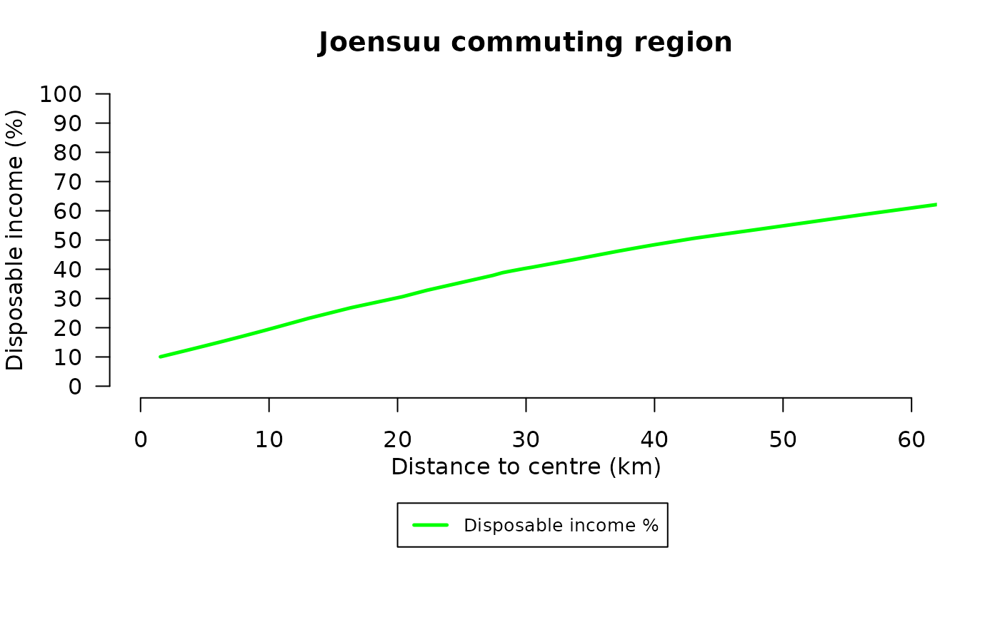
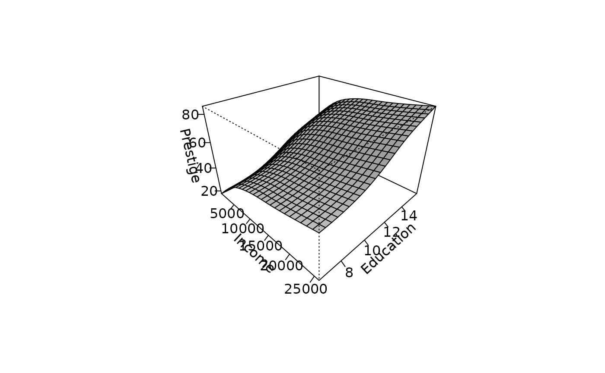
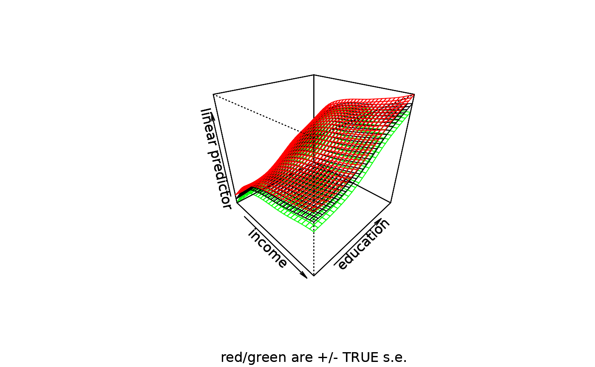
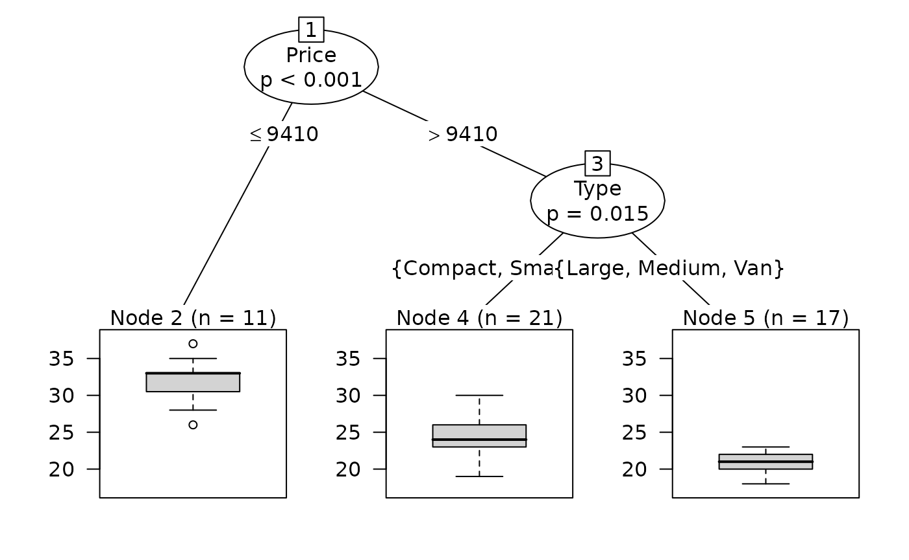

Lecture 5: Nonparametric regression
Source:vignettes/lecture05-nonparametric-regression.Rmd
lecture05-nonparametric-regression.RmdNonparametric regression
In general, nonparametric regression model is written as
where the object is to estimate the regression function f( ) directly from the data, rather than to estimate parameters. The nonparametric regression models are flexible to estimate sparse data with complex phenomena, and they do not violate the assumptions of iid.
An important special case of the general model is nonparametric simple regression, where there is only one predictor:
This nonparametric simple regression is often called as “scatterplot smoothing” because an important application is to tracing a smooth curve through a scatterplot of y against x.
Because it is difficult to fit the general nonparametric regression model when there are many predictors, and because it is difficult to display the fitted model when there are more than two or three predictors, more restrictive models have been developed. One such model is the additive regression model:
where the partial-regression functions are assumed to be smooth, and are to be estimated from the data. This model is substantially more restrictive than the general nonparametric regression model, but less restrictive than the linear regression model, which assumes that all of the partial-regression functions are linear.
Variations on the additive model regression model include semiparametric models, in which some of the predictors enter linearly, for example:
(which is particularly useful when some of the predictors are factors), and models in which some predictors enter into interactions, which appear as higher-dimension terms in the model, for example:
All these models extend to generalized nonparametric regression.
Estimation
There are several approaches to estimating nonparametric regression models which are here described two; local polynomial regression and smoothing splines.
Local polynomial regression
Here we are looking to fit the model:
Let focus on evaluating the regression function at a particular x-value, x0. We proceed to perform a pth-order weighted-leaset-squares polynomial regression of y on x,
weighting the observation in relation to their proximity to the focal value x0; a common weight function to use is the tricube function:
where . The h is the half-width of a window enclosing the observations for the local regression. Typically the h is adjusted so that each local regression includes a fixed proportion s of the data. Therefore, s is called the span of the local-regression smoother. The larger the span is, the smoother the results is, and conversely, the larger the order of the local regressions p is, the more flexible the smooth is. In this weighting function the observations which are located further than bandwidth (h), get a weighting value 0. This means that they don´t have impact for local estimation at point x0.
Example 1:
The process of fitting a local regression is illustrated on following example. Here we examine the regression of prestige on income.
See more about data:
?car## No documentation for 'car' in specified packages and libraries:
## you could try '??car'A local regression is estimated with code below:
## The following object is masked from package:datasets:
##
## womenExample 2
Let’s extend the illustration of the previous section, and use the loess function. Let us regress prestige on both the income and education levels of the occupations:
## Call:
## loess(formula = prestige ~ income + education, span = 0.5, degree = 1)
##
## Number of Observations: 102
## Equivalent Number of Parameters: 8.03
## Residual Standard Error: 6.906
## Trace of smoother matrix: 10.5 (exact)
##
## Control settings:
## span : 0.5
## degree : 1
## family : gaussian
## surface : interpolate cell = 0.2
## normalize: TRUE
## parametric: FALSE FALSE
## drop.square: FALSE FALSESpecifying degree=1 fits locally linear regressions; the default is degree=2 which means locally quadratic regression. To see the full range of arguments for the loess function, consult the online help. The summary includes the standard deviation of the residuals under the model and an estimate of the equivalent number of parameters employed by the model. In this case, there are estimated 8 parameters. A standard linear regression would have employed 3 parameters (constant and 2 slopes).
As in nonparametric regression, there are no parameters estimates: To see the result of the regression, we have to examine the fitted regression surface graphically. The illustration is produced by the following code:
inc <- seq(min(income), max(income), len=25)
ed <- seq(min(education), max(education), len=25)
newdata <- expand.grid(income=inc,education=ed)
fit.prestige <- matrix(predict(mod.lo, newdata), 25, 25)
persp(inc, ed, fit.prestige, theta=45, phi=30, xlab="Income", ylab="Education", zlab="Prestige", expand=2/3, shade=0.5)
The problems with nonparametric fits is related on the limited visualization of higher dimensions.
Smoothing splines
Smoothing splines arise as the solution of the following simple regression problem: find the function that minimizes the penalized sum of squares:
where h is a smoothing parameter, analogous to the neighborhood-width of the local-polynomial estimator. First term in equation is the residual sum of squares. Second term is a roughness penalty, which is large when the integrated second derivative of the regression function is large.
The function that minimizes above function is a natural cubic spline with knots at the distinct observed values of x. Although this result seems to imply that n parameters are required, the roughness penalty imposes additional constraints on the solution, typically reducing the equivalent number of parameters for the smoothing spline substantially, and preventing from interpolating the data. Indeed, it is common to select the smoothing parameter h indirectly by setting the equivalent number of parameters for the smoother.
Because there is an explicit objective-function to optimize, smoothing splines are more elegant mathematically than local regression. It is more difficult, however, to generalize smoothing splines to multiple regression, and smoothing-spline and local regression fits with the same equivalent number of parameters are usually very similar.
An illustration appears in below, comparing a smoothing spline with a local-linear fit employing the same number of equivalent parameters. We use smooth.spline function along with previous loess model to show alternative fits to the relationship of prestige to income:
## The following objects are masked from Prestige (pos = 3):
##
## census, education, income, prestige, type, women## The following object is masked from package:datasets:
##
## women
mod.lo.inc <- loess(prestige ~ income, span=.7, degree=1)
plot(income, prestige)
inc.100 <- seq(min(income), max(income), len=100) # 100 x-values
pres <- predict(mod.lo.inc, data.frame(income=inc.100)) # fitted values
lines(inc.100, pres, lty=2, lwd=2) # loess curve
lines(smooth.spline(income, prestige, df=3.85), lwd=2) # smoothing splineNote that two smooths are very similar; the solid line is the local-linear fit and the broken line is the smoothing spline.
Kernel Estimators
In its simplest form, this estimator reduces to a moving average. More generally, our estimate of the regression function , denoted by , is given by
where the weights are defined as
Here, is a kernel function satisfying the usual regularity conditions. The moving‑average kernel is rectangular, but smoother kernels can often give better results. The parameter is called the bandwidth, window width, or smoothing parameter, and it controls the smoothness of the fitted curve.
If the predictor values are unevenly spaced, this estimator may perform poorly. This problem is partially alleviated by the Nadaraya–Watson estimator,
This estimator modifies the moving‑average estimator so that it becomes a true weighted average, where the weights associated with the observations sum to one.
The implementation of a kernel estimator requires two choices; the kernel and the smoothing parameter. For the choice of kernel, smoothness and compactness are desirable. We prefer smoothness to ensure that the resulting estimator is smooth, so for example, the uniform kernel will give stepped-looking fit that we may wish to avoid. We also prefer a compact kernel because this ensures that only data, local to the point at which f is estimated, is used in the fit. This means that the Gaussian kernel is less desirable, because although it is light in the tails, it is not zero, meaning in principle that the contribution of every point to the fit must be computed.
The choice of smoothing parameter λ is more critical to the performance of the estimator and far more important than the choice of kernel. If smoothing parameter is too small, the estimator will be rough: but if it is too large, important features will be smoothen out.
Next we demonstrate the Nadaraya-Watson estimator next for a variety of choices of bandwidth on the Old Faithful data. We use the ksmooth function which is part of the R base package. The default uses a uniform kernel, which is somewhat rough. We changed it to the normal kernel:
par(mfrow=c(1,3))
plot(waiting~eruptions,faithful, main="Bandwidth=0.1",pch=".")
lines(ksmooth(faithful$eruptions,faithful$waiting,"normal",0.1))
plot(waiting~eruptions,faithful, main="Bandwidth=0.5",pch=".")
lines(ksmooth(faithful$eruptions,faithful$waiting,"normal",0.5))
plot(waiting~eruptions,faithful, main="Bandwidth=2",pch=".")
lines(ksmooth(faithful$eruptions,faithful$waiting,"normal",2))Selecting the smoothing parameter
Both local-polynomial regression and smoothing splines have an adjustable smoothing parameter. This parameter may be selected by visual trial and error, picking a value that balances smoothness against fidelity to the data. More formal methods of selecting smoothing parameters typically try to minimize the mean-squared error of the fit either by employing a formula approximating the mean-square error or by some form of cross-validation.
In cross-validation, the data are divided into subsets and the model is successively fitted while omitting each subset in turn. The fitted model is then used to predict the response for the left‑out observations. Repeating this procedure for different values of the smoothing parameter suggests a value that minimizes the cross‑validation estimate of the mean squared error.
Cross-validation can be computationally intensive, and therefore approximations are often employed in practice. The cross‑validation criterion can be written as
where denotes the estimator obtained by leaving out observation when fitting the model. The value of is chosen to minimize this criterion.
For example, we can find the CV choice of bandwidth for the Old Faithful data and plot the result:
sm.regression(faithful$eruptions, faithful$waiting, h=hm, xlab="eruptions", ylab="waiting")Comparison of the nonparametric and parametric nonlinear regression models
Previously we have used lm() function to perform linear regression models. Here we will look at more advanced aspects of regression models and see what R has to offer.
One way of checking for non-linearity in your data is to fit a polynomial model and check whether the polynomial model fits the data better than a linear model. However, you may also wish to fit a quadratic or higher model because you have reason to believe that the relationship between the variables is inherently polynomial in nature. Let’s see how to fit a quadratic model in R
##
## Call:
## lm(formula = prestige ~ income, data = Prestige)
##
## Residuals:
## Min 1Q Median 3Q Max
## -33.007 -8.378 -2.378 8.432 32.084
##
## Coefficients:
## Estimate Std. Error t value Pr(>|t|)
## (Intercept) 2.714e+01 2.268e+00 11.97 <2e-16 ***
## income 2.897e-03 2.833e-04 10.22 <2e-16 ***
## ---
## Signif. codes: 0 '***' 0.001 '**' 0.01 '*' 0.05 '.' 0.1 ' ' 1
##
## Residual standard error: 12.09 on 100 degrees of freedom
## Multiple R-squared: 0.5111, Adjusted R-squared: 0.5062
## F-statistic: 104.5 on 1 and 100 DF, p-value: < 2.2e-16Let’s create quadric variable:
Prestige$income2 <- Prestige$income^2And then fit linear regression model with quadric variable
##
## Call:
## lm(formula = prestige ~ income + income2, data = Prestige)
##
## Residuals:
## Min 1Q Median 3Q Max
## -16.963 -7.967 -2.303 7.847 32.928
##
## Coefficients:
## Estimate Std. Error t value Pr(>|t|)
## (Intercept) 1.418e+01 3.515e+00 4.035 0.000108 ***
## income 6.154e-03 7.593e-04 8.104 1.43e-12 ***
## income2 -1.433e-07 3.141e-08 -4.562 1.45e-05 ***
## ---
## Signif. codes: 0 '***' 0.001 '**' 0.01 '*' 0.05 '.' 0.1 ' ' 1
##
## Residual standard error: 11.04 on 99 degrees of freedom
## Multiple R-squared: 0.596, Adjusted R-squared: 0.5879
## F-statistic: 73.03 on 2 and 99 DF, p-value: < 2.2e-16Our quadratic model is essentially a linear model in two variables, one of which is the square of the other. We see that however good the linear model was, a quadratic model performs even better, explaining an additional 8% of the variance.
Let’s draw a plot:
summary(Prestige$income)## Min. 1st Qu. Median Mean 3rd Qu. Max.
## 611 4106 5930 6798 8187 25879
incomevalues <- seq(0, 26000, 1000)
# predicted values
predictedcounts <- predict(quadratic.model,list(income=incomevalues, income2=incomevalues^2))and the plot:
plot(Prestige$income, Prestige$prestige, pch=16, xlab = "Income ($)", ylab = "Prestige", cex.lab = 1.3, col = "blue")
lines(incomevalues, predictedcounts, col = "darkgreen", lwd = 3)
# add a normal regression line
abline(lm(prestige~income, data=Prestige), lwd=3, lty=2, col="red")
# add a nonparametric model
lines(lowess(Prestige$income, Prestige$prestige, f=0.5, iter=0), col="green", lty=3, lwd=3)
The quadratic model appears to fit the data better than the linear model. Recall that, in this context, the term linear refers to linearity in the model parameters. Consequently, models that include quadratic or higher‑order polynomial terms are still linear models.
Example: Modeling Disposable Income Differences Using Nonparametric Regression
The aim is of this example is to visualize how residents’ disposable incomes vary in North Karelia if commuting were to concentrate in Joensuu. The analysis illustrates regional differences in the ability to benefit from Joensuu’s development.
Objective of the Exercise In this lecture, we demonstrate how to:
- Download spatial postcode-level data from Statistics Finland’s WFS service
- Combine different datasets
- Using R to compute variables
- Use nonparametric regression in analysis
The workflow combines spatial data handling, data merging, and basic statistical analysis with nonparametric regression.
install.packages("purrr")
install.packages("sf")
install.packages("tmap")
install.packages("httr")
install.packages("data.table")
install.packages("ows4R")
#options(pckgType="binary")
library(dplyr)
library(purrr)
library(sf)
library(httr)
library(data.table)
library(ows4R)Downloading Postcode Area Data (Year 2022)
We begin by downloading postcode area data using a Web Feature Service (WFS) query.
url <-list(hostname ="geo.stat.fi/geoserver/postialue/wfs",
scheme ="https",
query =list(service ="WFS",
version ="2.0.0",
request ="GetFeature",
typename ="postialue:pno_tilasto_2025",
outputFormat ="json"))%>%
setattr("class","url")
request <-build_url(url)
p25 <-st_read(request)## Reading layer `OGRGeoJSON' from data source
## `https://geo.stat.fi/geoserver/postialue/wfs/?service=WFS&version=2.0.0&request=GetFeature&typename=postialue%3Apno_tilasto_2025&outputFormat=json'
## using driver `GeoJSON'
## Simple feature collection with 3026 features and 113 fields
## Geometry type: MULTIPOLYGON
## Dimension: XY
## Bounding box: xmin: 83748.43 ymin: 6629044 xmax: 732907.7 ymax: 7776450
## Projected CRS: ETRS89 / TM35FIN(E,N)Next, we load average housing prices per square meter for each postal code area in Joensuu, based on housing advertisements.
etuo <- read.csv(
system.file("extdata", "keskineliohinta2014_2023.csv",
package = "spatialcourseOL"), sep=",", check.names = FALSE)2. Prepare spatial data and calculate distances
We extract postal code area centroids, convert them into an sf object, define the coordinate reference system, and transform the data to WGS84 coordinates (longitude–latitude).
zip_centroids <- data.frame(p25[,c(2,5,6)])
zip_centroids <- st_as_sf(zip_centroids)
st_crs(zip_centroids) <- 3067
zip_centroids_ll <- st_transform(zip_centroids, 4326)
##
zip_centroids_pt <- st_point_on_surface(zip_centroids_ll)## Warning: st_point_on_surface assumes attributes are constant over geometries## Warning in st_point_on_surface.sfc(st_geometry(x)): st_point_on_surface may not
## give correct results for longitude/latitude data
coords_mat <- st_coordinates(zip_centroids_pt)3. Define the reference point (Joensuu Market Square) and calculate distances
The reference point is the Joensuu Market Square, expressed in longitude and latitude (WGS84).
Distances from each postal code area to the Joensuu centre are calculated using great‑circle (Haversine) distance and expressed in kilometers.
zip_centroids_pt$distance_km <- distHaversine(
coords_mat,
ref_point) / 10004. Merge datasets
zip_centroids_merged <- merge(
zip_centroids_pt, # sf FIRST (important)
etuo, # data.frame SECOND
by.x = "postinumeroalue",
by.y = "Group.1",
all.x = TRUE) # keep all spatial rows (LEFT JOIN)This step merges the spatial postal‑code centroids (zip_centroids_pt, an sf object) with the socioeconomic data (etuo, a data frame). The merge is performed using postal code identifiers, which are named differently in the two datasets (postinumeroalue and Group.1). By setting all.x = TRUE, all postal code areas in the spatial dataset are retained, even if corresponding data are missing in etuo (left join).
zip_centroids_final <- zip_centroids_merged %>%
left_join(
st_drop_geometry(p25),
by = "postinumeroalue")In this step, additional attribute data from p25 are joined to the dataset using the postal code as the key. The geometry is removed from p25 before the join to avoid creating multiple geometry columns. The result is a single sf object that combines spatial information with multiple socioeconomic variables.
5. Compute average housing prices (2020–2023)
The housing price variables are converted to numeric form, and the average price over the years 2020–2023 is calculated.
zip_centroids_final <- zip_centroids_final %>%
mutate(
across(
c(`2020`, `2021`, `2022`, `2023`),
as.numeric))
zip_centroids_final <- zip_centroids_final %>%
rowwise() %>%
mutate(
avg_2020_2023 = mean(c_across(`2020`:`2023`), na.rm = TRUE)
) %>%
ungroup()We restrict the analysis to postal code areas with positive average prices.
data<-subset(zip_centroids_final, avg_2020_2023>0)6. Calculate commuting and housing costs
We use this variables in this example:
- distance_km = distance to Joensuu centre (km)
- avg_2020_2023 = average price of housing (€/m2),
- ra_as_kpa = average size of apartment (m2),
- hr_mtu = median income of household (€)
We now calculate commuting costs and housing costs under the assumption that commuting is directed to the Joensuu city centre.
Commuting cost: 0.25 € per km 240 commuting days per year Round trips (to work and back home)
# commuting costs (commuting distance * €/km * number of commuting trips *2 (to work and back home))
data$commuting_cost<-data$distance_km*2*0.25*240House costs are estimated as the product of average housing price and average apartment size.
data$house_cost<-data$avg_2020_2023*data$ra_as_kpaWe assume a 10‑year loan with a fixed annual interest rate of 5%.
interest_rate<-0.05 #interest rate
n<-10 #years
loan<-data$house_cost
data$payment_year <- loan*interest_rate/(1-(1+interest_rate)^(-n)) #annual paymentTotal annual costs consist of housing payments and commuting costs.
data$total_cost<-data$payment_year+data$commuting_cost #current7. Disposable income
Disposable income is defined as the income remaining available to a household after housing and commuting costs are deducted.
data$disposable_income<-data$hr_mtu-data$total_cost
# disposable income as a rate
data$disposable_income_rate<-((data$hr_mtu-data$total_cost)/data$hr_mtu)*1008. Visualization: Disposable income and distance
We visualize the relationship between distance to the centre and disposable income using a nonparametric LOWESS smoother.
par(mfrow=c(1,1))
# define marginals for plot
par(mar=c(8, 4, 3, 2.1), xpd=TRUE)
plot(data$disposable_income~data$distance_km, main="Joensuu commuting region", xlab="", ylab="", col="white",ylim=c(0,30000),xlim=c(0,60),axes=FALSE)
axis(2, at=c(0,4000,8000,12000,16000,20000,24000,28000),labels=TRUE, col.axis="black", las=2)
axis(1, at=c(0,10,20,30,40,50,60),labels=TRUE, col.axis="black", las=1)
mtext("Distance to centre (km)",side=1,line=2)
mtext("Disposable income (%)",side=2,line=3)
# define legend
legend(20,-12000,ncol=1,c("disposable_income"),lty=c(1,1),lwd=c(2.5,2.5),col=c("green"),bg="white",cex=0.8)
par(xpd=T, mar=par()$mar+c(0,0,0,0.2))
par(xpd=F)
lines(lowess(data$distance_km,data$disposable_income,f=6/10, iter=25),col="green",lwd=2.5,lty=1)
9. Visualization: Disposable income rate (%)
Finally, we repeat the visualization using disposable income expressed as a percentage of household income.
par(mfrow=c(1,1))
# define marginals
par(mar=c(8, 4, 3, 2.1), xpd=TRUE)
plot(data$disposable_income_rate~data$distance_km, main="Joensuu commuting region", xlab="", ylab="", col="white",ylim=c(0,100),xlim=c(0,60),axes=FALSE)
axis(2, at=c(0,10,20,30,40,50,60,70,80,90,100),labels=TRUE, col.axis="black", las=2)
axis(1, at=c(0,10,20,30,40,50,60),labels=TRUE, col.axis="black", las=1)
mtext("Distance to centre (km)",side=1,line=2)
mtext("Disposable income (%)",side=2,line=3)
legend(20,-40,ncol=1,c("Disposable income %"),lty=c(1,1),lwd=c(2.5,2.5),col=c("green"),bg="white",cex=0.8)
par(xpd=T, mar=par()$mar+c(0,0,0,0.2))
par(xpd=F)
lines(lowess(data$distance_km,data$disposable_income_rate,f=6/10, iter=25),col="green",lwd=2.5,lty=1)
Interpretation
These figures illustrate how the potential to benefit from Joensuu’s development varies spatially. The nonparametric smoothing reveals nonlinear patterns in the relationship between commuting distance and household disposable income.
Additive nonparametric regression
Because it is difficult to fit the general nonparametric regression model when there are many predictors (more than two), and also because it is difficult to display the fitted model when there are more than two or three predictors, alternative more restrictive models have been developed. One such a model is additive regression model,
The additive nonparametric regression model is given by
where the partial regression functions are estimated using simple regression smoothers, such as local polynomial regression or smoothing splines.
This model is substantially more restrictive than the general nonparametric regression model, but less restrictive than the linear regression model, which assumes that all partial regression functions are linear. Generalized additive models (GAMs) are able to capture nonlinear relationships between the dependent and independent variables. These advantages are often reflected in empirical studies through higher values, indicating an improved fit to the data.
Let’s illustrate for the regresson of prestige on income and education employing the gam function in the mgcv library.
library(mgcv)
library(car)
data(Prestige)
mod.gam <- gam(prestige ~ s(income) + s(education), data=Prestige)
mod.gam##
## Family: gaussian
## Link function: identity
##
## Formula:
## prestige ~ s(income) + s(education)
##
## Estimated degrees of freedom:
## 3.12 3.18 total = 7.3
##
## GCV score: 52.1428The s function, used in spefifying the model formula, indicates that each term is to be fit with a smoothing spline. The degrees of freedom for each term are found by generalized cross validation. In this case the equivalent of 3.1178 parameters are used for the income term, and 3.1173 for the education term. The degrees of freedom for the model are the sum of these plus 1, for the regression constant. The additive regression surface is plotted in this plot:
inc <- seq(min(Prestige$income), max(Prestige$income), len=25)
ed <- seq(min(Prestige$education), max(Prestige$education), len=25)
newdata <- expand.grid(income=inc,education=ed)
fit.prestige <- matrix(predict(mod.gam, newdata), 25, 25)
persp(inc, ed, fit.prestige, theta=45, phi=30, ticktype="detailed", xlab="Income", ylab="Education", zlab="Prestige", expand=2/3, shade=0.5)
Plot shows the fitted surface for the additive nonparametric regression of prestige on income and education.
Perspective plots can also be made automatically using the persp.gam function. These graphs include a 95% confidence region:
vis.gam(mod.gam,se=T,phi=30,theta=45)
We can also plot both of the variables separately:
plot(mod.gam,pages=1)Interpretation of the figures
- A plot of of Xj versus sj(Xj) shows the relationship between Xj and Y holding constant the other variables in the model
- Since Y is expressed in mean deviation form, the smooth term sj(Xj) is also centered and thus each plot represents how Y changes relative to its mean with changes in X
- Interpreting the scale of the graphs then becomes easy:
- The value of 0 on the Y-axis is the mean of Y
- As the line moves away from 0 in a negative direction we subtract the distance from the mean when determining the fitted value. For example, if the mean is 45, and for a particular X-value (say x=15) the curve is at sj(Xj)=4, this means the fitted value of Y controlling for all other explanatory variables is 45+4=49.
- If there are several nonparametric relationships, we can add together the effects on the two graphs for any particular observation to find its fitted value of Y
lm and gam models
Let’s begin by using a typical linear regression to predict prestige by the income. We can still do straightforward linear models with the gam function, and again it is important to note that the standard linear model can be seen as a special case of a GAM.
library(car)
library(mgcv)
data(Prestige)
mod.lm<-gam(prestige~income,data=Prestige)
summary(mod.lm)##
## Family: gaussian
## Link function: identity
##
## Formula:
## prestige ~ income
##
## Parametric coefficients:
## Estimate Std. Error t value Pr(>|t|)
## (Intercept) 2.714e+01 2.268e+00 11.97 <2e-16 ***
## income 2.897e-03 2.833e-04 10.22 <2e-16 ***
## ---
## Signif. codes: 0 '***' 0.001 '**' 0.01 '*' 0.05 '.' 0.1 ' ' 1
##
##
## R-sq.(adj) = 0.506 Deviance explained = 51.1%
## GCV = 149.08 Scale est. = 146.16 n = 102Let’s now fit an actual generalized additive model using the cubic spline as our smoothing function. We again use the gam function as before for basic model fitting, but now we are using a function s within the formula to denote the smooth terms. Within that function we also specify the type of smooth, though a default is available. Here we chose ’cr’, denoting cubic regression splines.
##
## Family: gaussian
## Link function: identity
##
## Formula:
## prestige ~ s(income, bs = "cr")
##
## Parametric coefficients:
## Estimate Std. Error t value Pr(>|t|)
## (Intercept) 46.833 1.097 42.68 <2e-16 ***
## ---
## Signif. codes: 0 '***' 0.001 '**' 0.01 '*' 0.05 '.' 0.1 ' ' 1
##
## Approximate significance of smooth terms:
## edf Ref.df F p-value
## s(income) 2.381 2.892 48.87 <2e-16 ***
## ---
## Signif. codes: 0 '***' 0.001 '**' 0.01 '*' 0.05 '.' 0.1 ' ' 1
##
## R-sq.(adj) = 0.585 Deviance explained = 59.5%
## GCV = 127 Scale est. = 122.79 n = 102The first thing to note is, that aside from the smooth part, our model code is similar to what we’re used to with core R functions such as lm and glm. In the summary, we first see the distribution assumed as well as the link function used, in this case normal and identity, respectively, which to iterate, had we had no smoothing would result in a standard regression model. After that we see that the output is separated into parametric and smooth, or nonparametric parts. In this case, the only parametric component is the intercept. The smooth component of our model regarding income’s relationship with prestige is statistically significant, but there are a couple of things in the model summary that would be unfamiliar.
One can get sense of the form of the fit by simply plotting the model object as follows:
plot(mod.gam)Regression trees
Regression trees are similar to additive models in that they represent a compromise between the linear model and the completely nonparametric approach. Tree methodology has roots in both the statistics and computer science literature. In the computer science literatu, tree methodology has been applied to decision tree problems where there is no staochastic structure and we simply want to build a rule for making the correct decision.
Classification trees involve a categorical response variable and regression trees a continuous response variable; the approaches are similar enough to be referred to together as CART (Classification and Regression Trees). Predictors can be any combination of categorical or continuous variables.
he recursive partitioning regression algorithm proceeds as follows:
Initial split
Consider all possible partitions of the predictor space into two regions, where each partition is formed by splitting along a single predictor axis. That is, we choose one predictor and select a cut point within its range to divide the data into two regions. The exact location of the split between two adjacent observations is not important, so there are only a finite number of candidate partitions to consider.-
Choosing the best split
For each candidate partition, compute the mean of the response variable within each resulting region. The quality of a partition is evaluated by the residual sum of squares (RSS),where is the mean response in the region containing observation . The partition that minimizes the RSS is selected. Although many possible partitions must be examined, the calculations for each are simple, allowing the procedure to be carried out efficiently.
Recursive partitioning
The splitting process is then applied recursively within each of the resulting regions. Partitions are only allowed within existing regions and not across them. As a result, the overall partitioning structure can be represented as a tree. There is no restriction preventing the same predictor variable from being split multiple times in succession.
Why use regression trees?
Predictors like linear or polynomial regression are global models (“stationary models”), where a single predictive formula is supposed to hold over the entire data space. When the data has lots of features which interact in complicated, nonlinear ways, assembling a single global model can be very dificult, and hopelessly confusing when you do succeed. Some of the non-parametric smoothers try to fit models locally and then paste them together, but again they can be hard to interpret.
An alternative approach to nonlinear regression is to sub-divide, or partition, the space into smaller regions, where the interactions are more manageable. We then partition the sub-divisions again - this is recursive partitioning, as in hierarchical clustering - until finally we get to chunks of the space which are so tame that we can’t simple models to them. The global model thus has two parts: one is just the recursive partition, the other is a simple model for each cell of the partition.
Regression trees with party-package
The party package provides nonparametric regression trees for nominal, ordinal, numeric, censored, and multivariate responses.
The internet page http://cran.r-project.org/web/packages/party/vignettes/party.pdf, provides details.
You can create a regression or classification tree via the function: ctree(formula, data=)
The type of tree created will depend on the outcome variable (nominal factor, ordered factor, numeric, etc.). Tree growth is based on statistical stopping rules, so pruning should not be required.
Let’s now do a conditional inference tree for Mileage and start investigating data:
And then fit a model:

Explanation:
- The packages rpart and party are loaded; party provides the ctree() function for conditional inference trees.
- ctree() fits a regression tree model where Mileage is the response variable and Price, Country, Reliability, and Type are predictors.
- na.omit(cu.summary) removes observations with missing values before fitting the model.
- The algorithm recursively splits the data based on statistically significant associations between predictors and Mileage, using hypothesis tests rather than RSS minimization.
- plot(fit2) visualizes the resulting decision tree, showing the splitting variables and predicted Mileage values in each terminal node.
In short, this code fits and visualizes a conditional inference regression tree to explain Mileage based on vehicle characteristics.
Research example: Regression tree and growth probabilities
Olli Lehtonen & Markku Tykkyläinen. Competitiveness of peripheral regions in center‑oriented development – the case of Eastern Finland. Maaseudun Uusi Aika 2/2012: 5–20.
Abstract
In this article, we examine—using a generalized additive model—how growth in the number of jobs during the period 1994–2003 depended on the distance of postal code areas from the regional centers of Eastern Finland. In addition, we use experimental simulation to investigate which factors influenced employment development in declining postal code areas, that is, areas where the number of jobs did not increase.
Employment growth occurred primarily in the vicinity of provincial centers and, to a lesser extent, around smaller centers as well. The farther a postal code area was located from provincial centers and from centers with more than 20,000 inhabitants, the lower the likelihood of new job creation. An analysis of competitiveness factors in declining areas showed that weak connections to highly educated operating environments and a low proportion of young people weakened development prospects. After the severe recession of the early 1990s, no development emerged in the declining areas of Eastern Finland that would have slowed the pace of decline or generated new competitiveness factors associated with recovery.
You can read the full article here: https://journal.fi/maaseutututkimus/article/view/144094
Let’s first fit a GAM model and visualize its smooth terms. We begin by reading the input data that will be used in the analysis.
x <- read.csv(
system.file("extdata", "Data_regression_tree2.csv",
package = "spatialcourseOL"),sep=";", check.names = FALSE)Next, we load the required packages. The mgcv package is used to fit the generalized additive model (GAM), while party is later used for the regression tree.
We then fit a GAM with a binomial response. The model explains the probability of the outcome LOG using smooth functions of the distance variables. The estimated coefficients and smooth terms are summarized below.
library(mgcv)
library(party)
y_gam=gam(LOG~s(DIS456)+s(DIS20)+s(DIS10)+s(DIS6),family=binomial,data=x)
summary(y_gam)##
## Family: binomial
## Link function: logit
##
## Formula:
## LOG ~ s(DIS456) + s(DIS20) + s(DIS10) + s(DIS6)
##
## Parametric coefficients:
## Estimate Std. Error z value Pr(>|z|)
## (Intercept) -1.0238 0.1652 -6.196 5.79e-10 ***
## ---
## Signif. codes: 0 '***' 0.001 '**' 0.01 '*' 0.05 '.' 0.1 ' ' 1
##
## Approximate significance of smooth terms:
## edf Ref.df Chi.sq p-value
## s(DIS456) 8.593 8.915 54.949 < 2e-16 ***
## s(DIS20) 5.107 6.210 41.678 2.83e-06 ***
## s(DIS10) 1.000 1.000 0.432 0.51082
## s(DIS6) 6.156 7.280 19.522 0.00872 **
## ---
## Signif. codes: 0 '***' 0.001 '**' 0.01 '*' 0.05 '.' 0.1 ' ' 1
##
## R-sq.(adj) = 0.324 Deviance explained = 29.1%
## UBRE = -0.0072223 Scale est. = 1 n = 460The following plot shows the estimated smooth functions for each predictor, illustrating their potentially nonlinear effects on the response variable.
Next, we use the fitted probabilities from the GAM as the response variable in a regression tree. This allows us to explore how the predictors interact in explaining the GAM-based probabilities.
ccont=ctree_control(maxdepth=3)
fit2=ctree(y_gam$fit~x$DIS456+x$DIS20+x$DIS6,control=ccont)
plot(fit2)